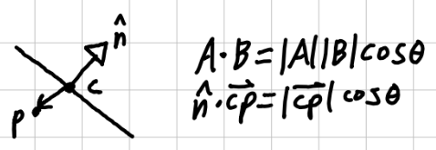
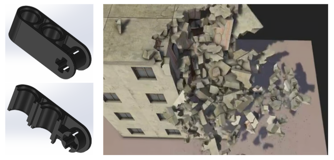
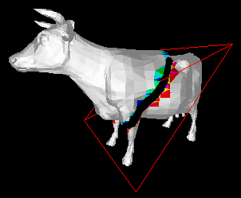
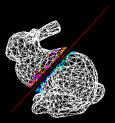
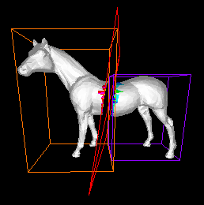
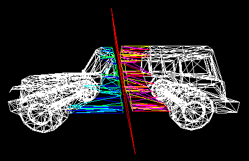
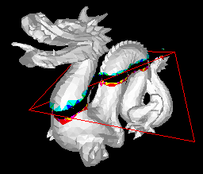
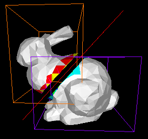

Usage
• Use the W/A/S/D keys to move the camera around.
• Use Shift/Space to move the camera up/down.
• Press Enter to toggle the plane movement.
• Press O to toggle the normal offset.
• Press B to toggle the bounding box view.
• Press F to toggle the triangle fill.
• Press R to randomize the mesh.
Overview
For this project, I wanted to experiment with the procedural splitting of meshes so as to replicate the fracture of a material.
The core algorithm of this project revolves around the clipping of triangles about a plane.
To determine which side of the plane a vertex is on, the dot product can be used.
Let c be any point on the plane, with n as its normal.
Let p be an arbitrary point in space.
If this dot product is greater than zero, p is front of the plane, else behind.

This isn't the whole story. There are a few cases that we need to cover. There is the case that the plane completely misses the triangle. If this happens, the side that its on is the mesh that it gets sent to. This accounts for 90% of the triangles, but if it splits the triangle, then a new triangle and quadrilateral need to be formed. (note: the other cases are symmetries of the ones shown.)

This is done using a segment-plane intersection to find where along the segment the plane hits. Then the retessellation into the tri and quad is trivial. For debugging purposes, and because I thought it looked cool, I chose to specially color these split tris. One side uses yellow, magenta, or red, while the other uses green, cyan, or blue. All other triangles are just left as white.
I intend to implement a multi-plane fracture in the future, such that a shape could look like it is being broken. I also intend to retriangulate the polygonal holes that arise at two sides of the plane surface.
Possible Use Case
A system like this can be useful for something like section view in CAD engines, where you want to see halfway through a part.
It could used for games like Speed Slice on the Wii.
It can also be used in CGI systems where simulating an objects breakage is too expensive, so you can just have the computer solve it.

Gallery





